0 для 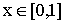; для параметров, входящих в краевые условия предположим выполненными неравенства:
0 для 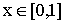; для параметров, входящих в краевые условия предположим выполненными неравенства:Основная цель. Познакомиться с разностными схемами для решения простейших краевых задач с краевыми условиями общего вида. В том числе, рассмотреть задачи, решения которых формируют пограничные слои.
Описание методов. Численные методы решения задач с пограничными слоями рассматриваются на примере краевой задачи для линейного уравнения с малым параметром при старшей производной:
| (1) |
В (1): 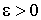 - малый параметр; a(x), b(x), f(x) - непрерывные функции на отрезке [0,1], причем b(x)0 для 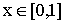; для параметров, входящих в краевые условия предположим выполненными неравенства:
Если к выше перечисленным условиям добавить еще одно:
то можно гарантировать существование и единственность классического решения задачи (1) (см. [1]).
Задачи вида (1) являются простейшими математическими моделями диффузионно-конвективных процессов и родственных физических явлений [2]. Наличие относительно малых подобластей с большими градиентами решения делают такие задачи сложными для численной реализации и требует использования разностных схем, учитывающих их специфику [3].
На отрезке [0,1] рассмотрим сетку
с равноотстоящими друг от друга узлами:
и шагом 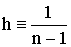. Примем также следующие обозначения:
 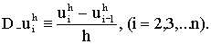
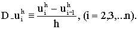Для аппроксимации задачи (1) рассматривается следующее семейство разностных схем, полученное с использованием простейшего метода дискретизации – метода конечных разностей:
| (2) |
| (3) |
В (2) 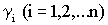 - параметры аппроксимационной вязкости, их выбор и определяет разностную схему в семействе (2); неизвестными в (2),(3) являются величины 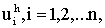 аппроксимирующие значения u(xi), (i=1,2,...n) точного решения задачи (1). Разностные краевые условия (3) могут быть заменены на более точные:
| (4) |
Здесь:
Для выбора параметров 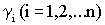 можно предложить следующие известные из литературы варианты:
Следующая схема (El-Mistikawy & Werle [8]) не содержится в семействе (2), для ее записи примем обозначения:
В этих обозначениях разностные уравнения имеют вид:
| (5) |
Разностные задачи (2, 3), (2, 4) и (5,6) могут быть записаны в виде:
| (7) |
и решены при помощи метода прогонки. Внутренние свойства дискретной задачи (7) определяются понятием «монотонная разностная схема».
Определение 1 (см. [4]). Дискретная задача (7) называется монотонной, если для нее выполнены условия:
и хотя бы одно из этих неравенств - строгое.
Разностные схемы
(2,
3),
(2,
4) и
(5,
6) называются монотонными, если соответствующие им разностные задачи
(7) монотонны для любых положительных значений параметров h и 

Известно, что монотонность разностной схемы гарантирует однозначную разрешимость соответствующей задачи (7) (доказано, например, в [4]), кроме того, для такой разностной схемы обеспечено выполнение достаточных условий корректности и устойчивости монотонной прогонки.
Предположим, что 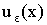 - решение дифференциальной задачи (1), в обозначения включена зависимость от параметра 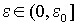, пусть 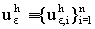 - сеточная функция являющаяся решением некоторой разностной задачи, аппроксимирующей задачу (1), например задачи (2,3), (2,4) или (5,6). Для произвольной сеточной функции 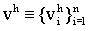 введем «сильную» сеточную норму по формуле:
напомним также, что 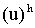 - проекция непрерывной функции u(x) на сетку.
Определение
2 (см.
[3]). Решение 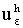 разностной (дискретной) задачи сходится к решению дифференциальной задачи с порядком p>0,
если найдется такая константа C>0, возможно зависящая  , но не зависящая от h («классическая» сходимость), что:
, но не зависящая от h («классическая» сходимость), что:
Если константа «C» в последней оценке не зависит от h и от , то говорят о "равномерной по  сходимости с порядком «p»
сходимости с порядком «p»
Из литературы известно (например,
[3]), что разностные схемы 1) - 4) не обладают равномерной по  сходимостью. Тем не менее, порядки классической сходимости для этих схем следующие: для схемы 2) – первый, для схем 1), 3), 4) - второй.
сходимостью. Тем не менее, порядки классической сходимости для этих схем следующие: для схемы 2) – первый, для схем 1), 3), 4) - второй.
Схемы 5) (Ильина А.М.) и 6) (El_Mistikawy & Werle) обе обладают вторым порядком классической сходимости, кроме того, первая из этих схем гарантирует первый порядок равномерной по  сходимости, а вторая схема - второй порядок равномерной по
сходимости, а вторая схема - второй порядок равномерной по  сходимости.
сходимости.
Все схемы, за исключением схемы с центральной разностью 1), являются монотонными в смысле Определения 1, схема 1) гарантирует монотонность только в случае выполнения ограничения на выбор параметров h и 
поэтому эту схему обычно классифицируют как условно-монотонную.
Тестовые задачи.
Задача 1. «Уравнение с постоянными коэффициентами», считаем, что коэффициенты уравнения в (1) постоянные: тогда решение задачи (1) можно выписать в явном виде, сделаем это, вводя обозначение для следующей функции:
| (8) |
и рассматривая три различных случая:
Задача 2.
Задача 3.
Задача 4.
Задача 5.
Задача 6.
где функция E(x) определена формулой (8) , а правая часть f(x) в уравнении (1) определяется после подстановки решения u(x) в левую часть этого уравнения.
Требования к программе. Программа должна включать:
Разностную схему (2, 3), или (2, 4), с возможностью выбора параметров , или при их фиксированных значениях, или схему (2, 5), (по усмотрению преподавателя).
Тестовые задачи (по выбору преподавателя).
Вывод относительных погрешностей по формуле:
Возможность выбора числа узлов сетки «n», а также параметра « » (если он есть по условию тестовой задачи).
» (если он есть по условию тестовой задачи).
Графика: одновременная отрисовка точного и приближенных решений (проинтерполированных кусочно-линейным сплайном).
Задание для работы с программой. В процессе работы с программой и при написании Отчета необходимо ответить на следующие вопросы:
Как ведут себя решения дифференциальных задач при  стремящемся к нулю?
стремящемся к нулю?
Как влияет увеличение параметра n (при фиксированном  ) на точность разностных схем? Сопоставить численные результаты с теоретическими оценками сходимости.
) на точность разностных схем? Сопоставить численные результаты с теоретическими оценками сходимости.
Влияет ли уменьшение параметра  (при фиксированном n) на точность разностных схем (по каждой схеме отдельно)?
(при фиксированном n) на точность разностных схем (по каждой схеме отдельно)?
Сравнить точность разностных схем между собой и сопоставить экспериментально полученные результаты с теорией.
Исследовать монотонность используемых разностных схем. Проявляется ли наличие или отсутствие свойства монотонности в работе разностной схемы?
Задача 1 предполагает возможность выбора коэффициентов в уравнении (const) и граничных условиях. При работе с этой задачей необходимо рассмотреть различные варианты пограничных слоев:
пограничный слой у левой границы (a > 0, b 0),
пограничный слой у правой границы (a < 0, b  0),
0),
пограничные слои у обеих границ (a = 0, b > 0).
Ладженская О. А. Краевые задачи математической физики.-М.: Наука, 1973. -408 с.
Роуч П. Вычислительная гидродинамика.-М.: Мир, 1980. -616 с.
Дуан Э., Миллер Дж., Шилдерс У. Равномерные численные методы решения задач с пограничным слоем. -М.: Мир, 1983. -198 с.
Самарский А. А. Теория разностных схем. -М.: Наука, 1983. - 616 с.
Булеев Н.И., Тимухин Г.И. О составлении разностных уравнений гидродинамики вязкой неоднородной среды // Численные методы механики сплошной среды. -1972. -Т. 3, №4. -С.19-26.
Булеев Н.И. Пространственная модель турбулентного обмена.-М.: Наука, 1983. -344 с.
Ильин А. М. Разностная схема для дифференциального уравнения с малым параметром при старшей производной // Математические заметки.-1969. -Т.6. -Вып. 2. -С. 237-248.
El-Mistikawy, T. M., Werle, M. J. Numerical method for boundary layers with blowing - the exponential box scheme // AIAAJ. -1978. –V.16. –P.749-751.